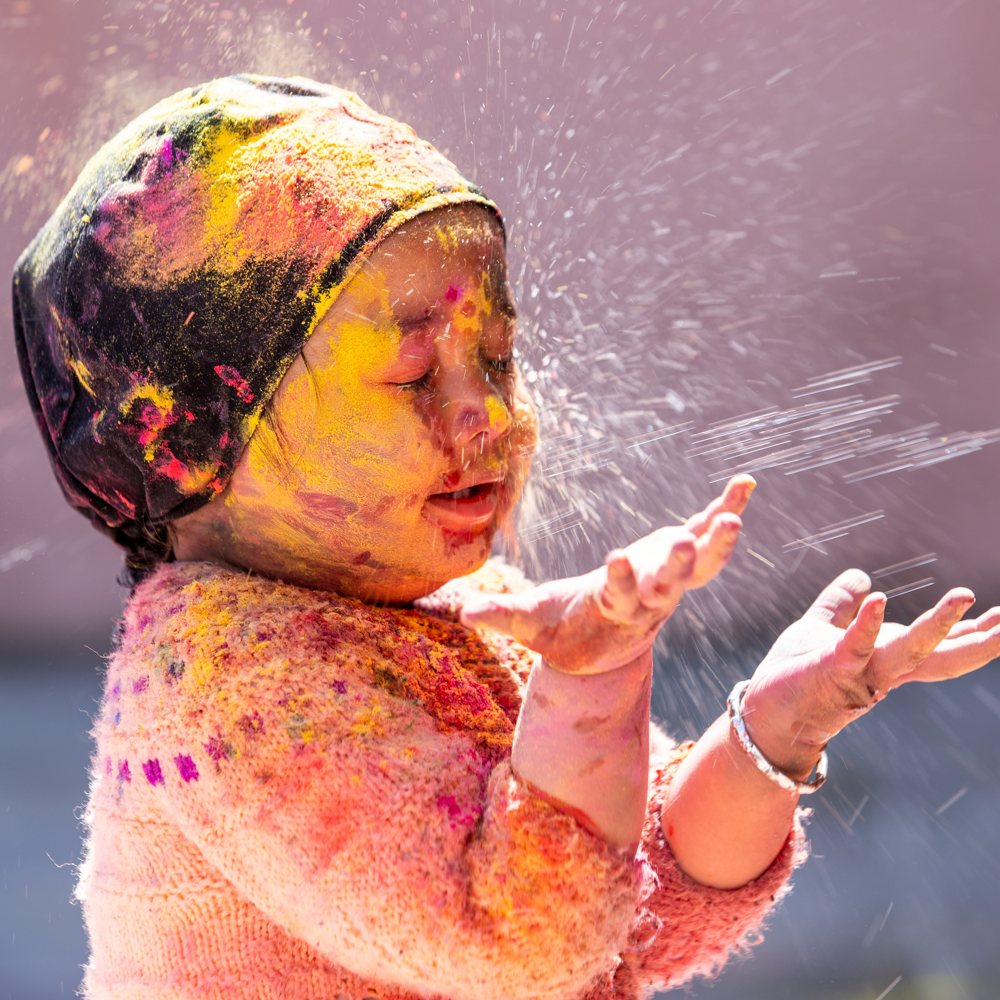
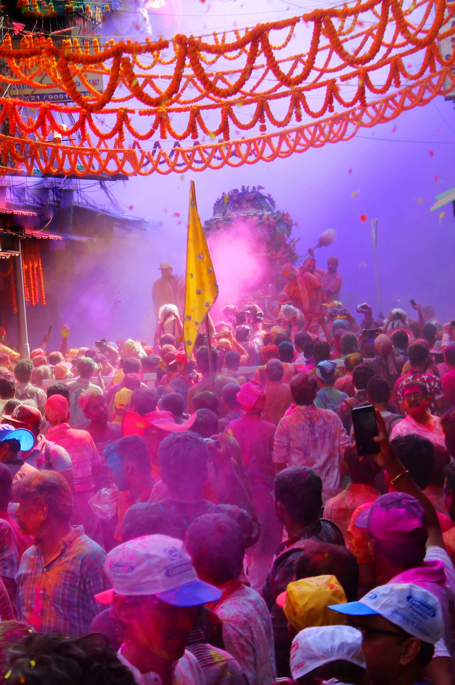
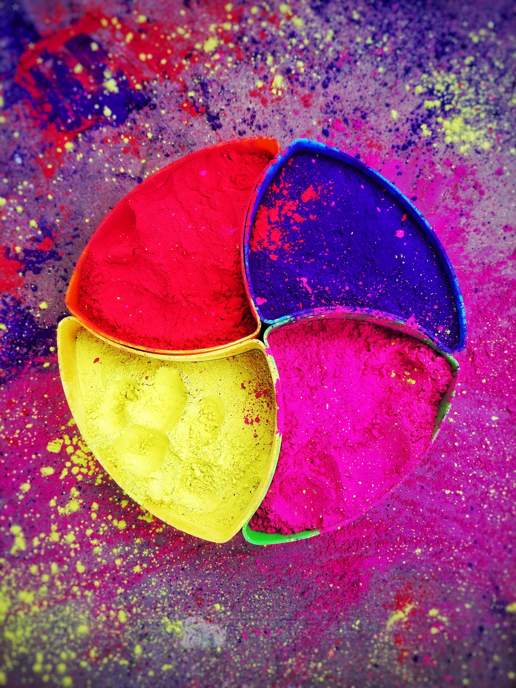
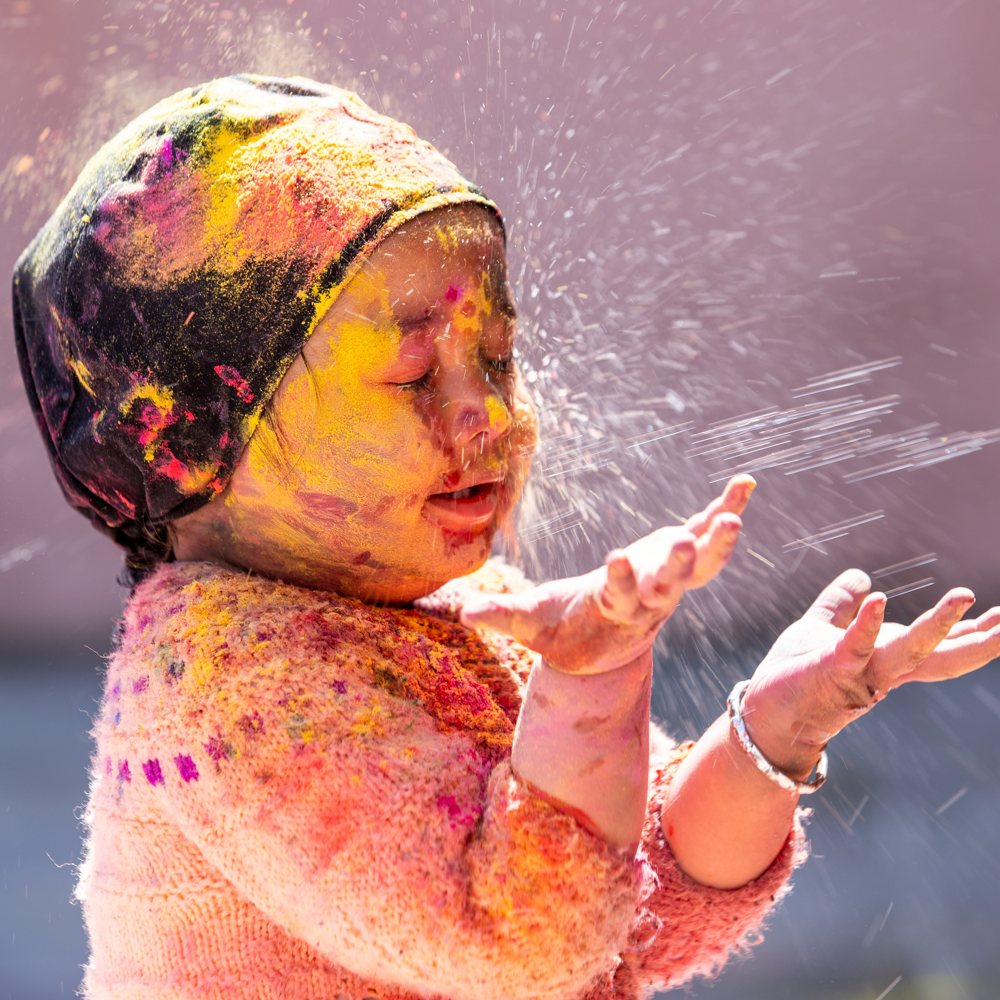
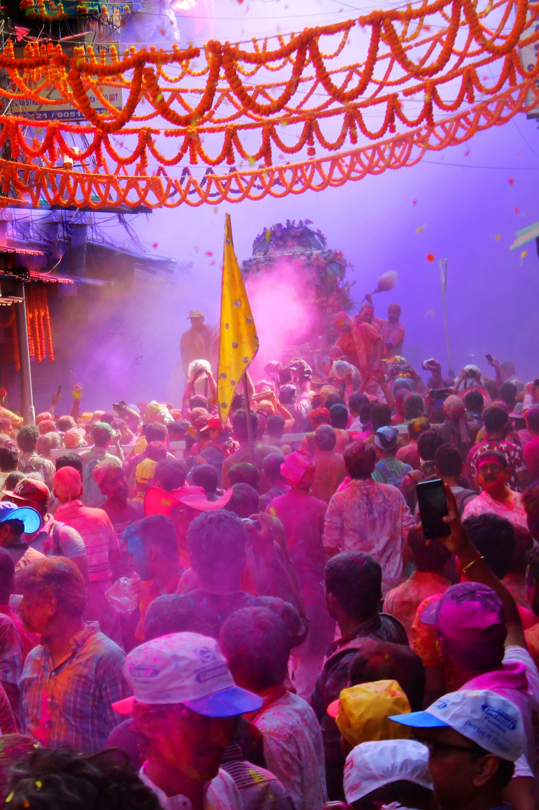
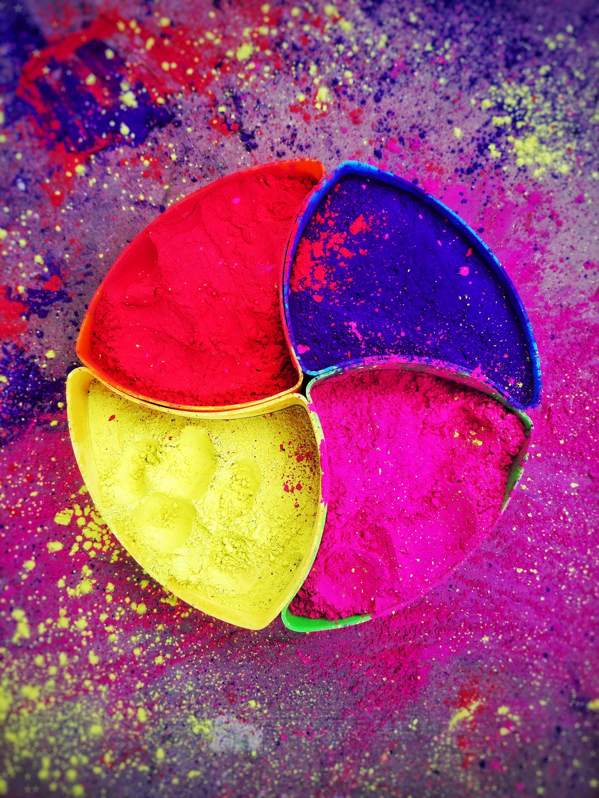
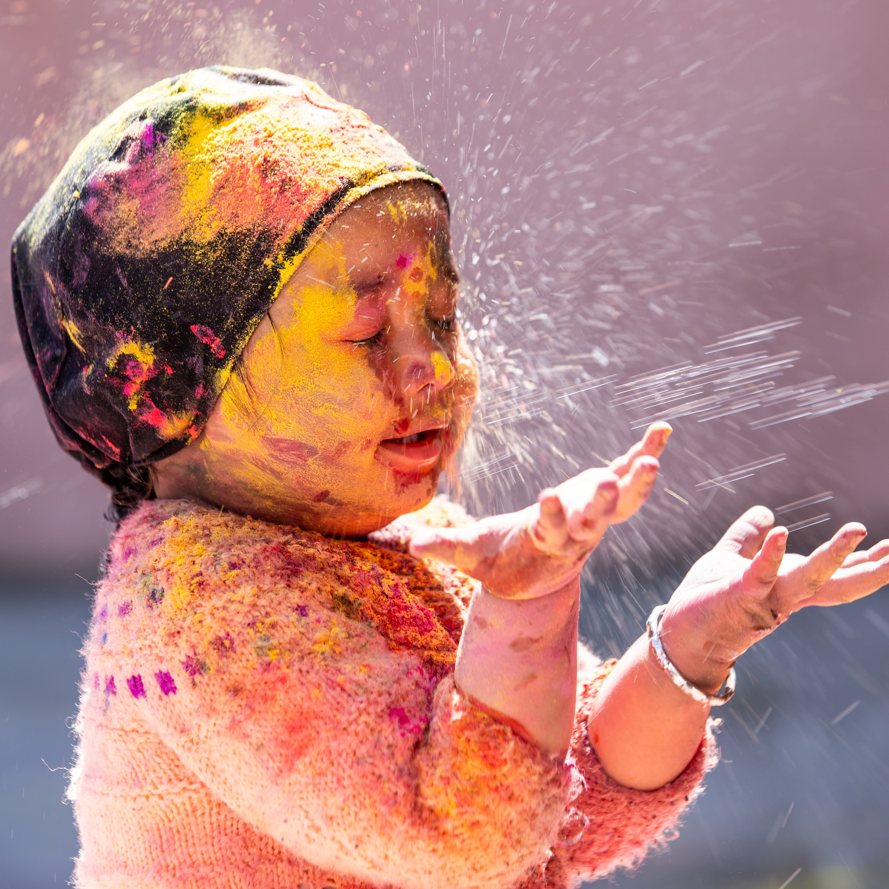
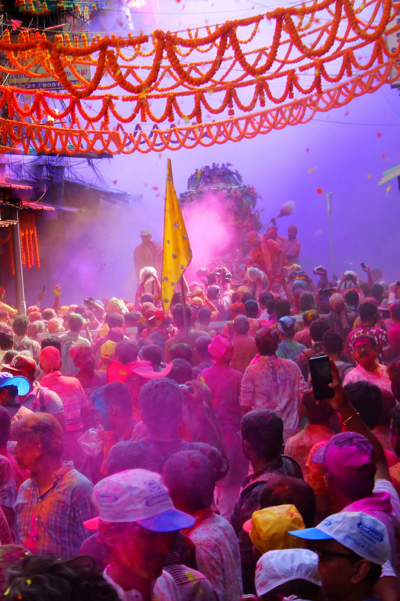
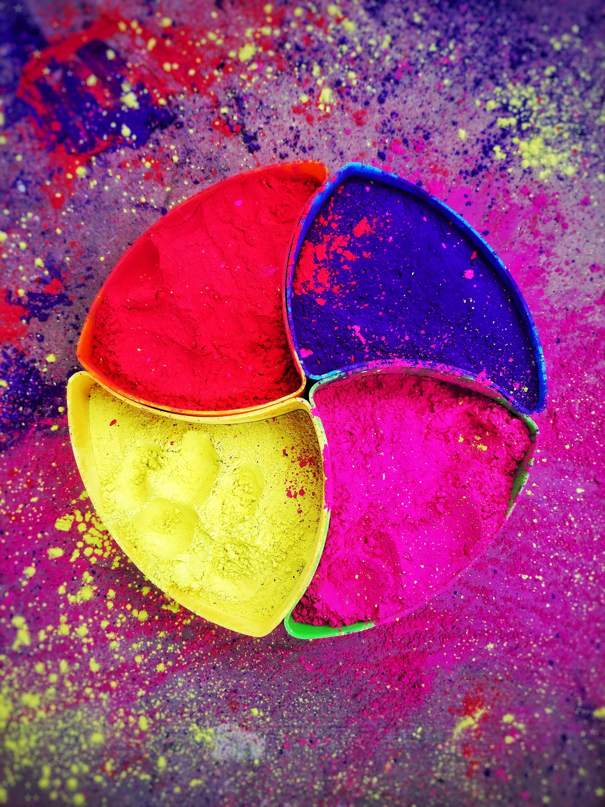
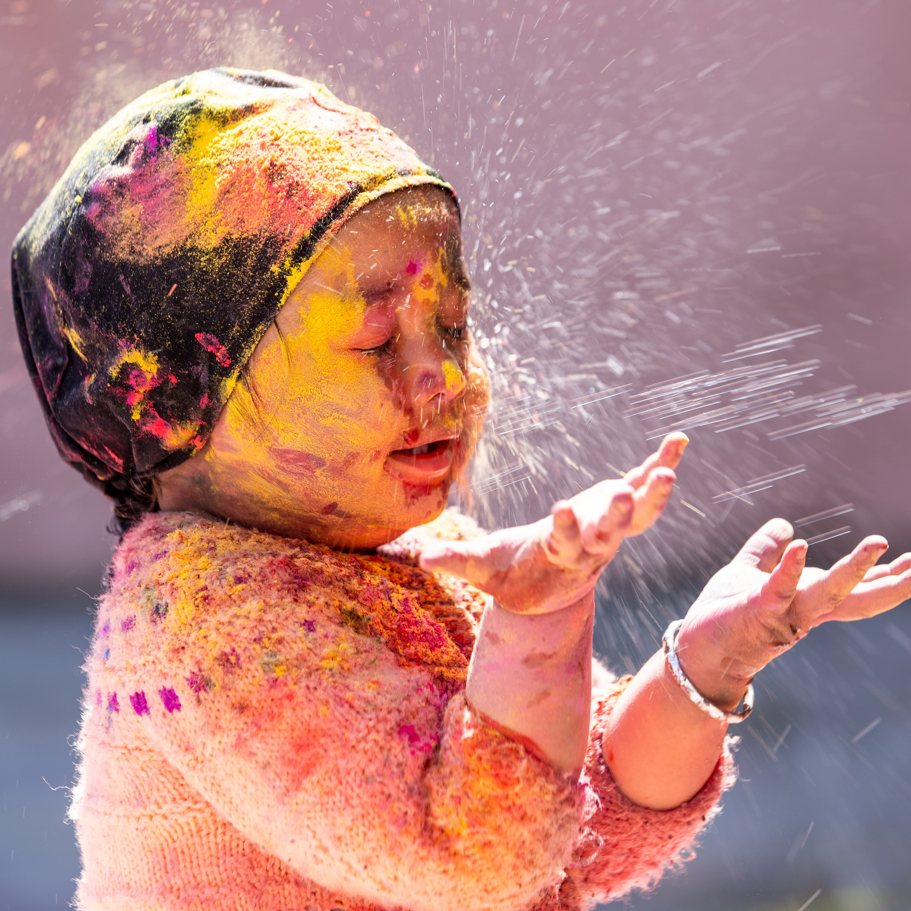
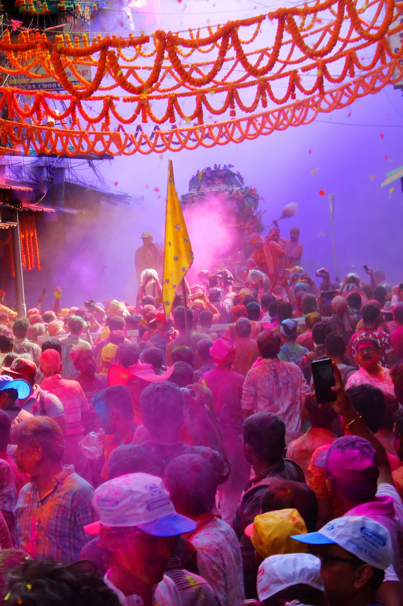
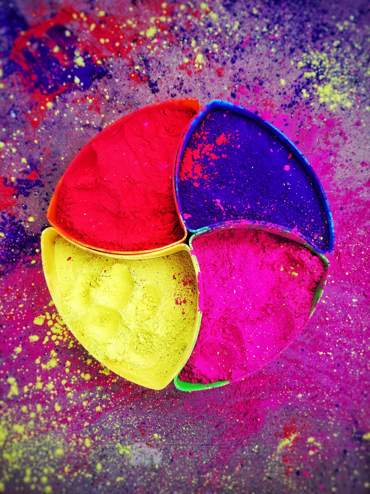
Holi is known as the festival of colours. It is about celebrating happiness with friends and family. People forget their troubles and indulge in this festival to celebrate brotherhood. In other words , we forget our emmitiesand get into the festival spirit. Holi is called the festival of colors because people play with colours and apply them to each other's faces to get coloured in the essence of the festival.
The hindu relegion beleives there was a devil king named hiranyakashyap long ago. He had a son named prahalad and a sister called Holika. It is beleived that the devil king had blessings of lord brahma. This blessing meant no man, animal or weapon could kill him. This blessing turned into a curse for him as he bacame very arrogant. He ordered his kingdom to worship him instead of god, not sparing his own son. Following this, all the people began worshipping him except for his son , Prahlad . Prahlad refused to worship his father instead of god as he was a true beleiver of lord vishnu. Upon seeing his disobediance, the devil king planned with his sisiter to kill Prahlad. He made her sit in the fire with his son on the lap, where Holika got burned and Prahlad came out safe. This indicated he was protected by his lord because of his devotion. Thus , people started celebrating holi as the victory of good over evil.